Understanding the user and app usage
The app is aimed at helping users consume informative content via mobile data in their native language. It would also capture and report data usage for DoData app and other indicated apps to ensure effective use of the donated data.
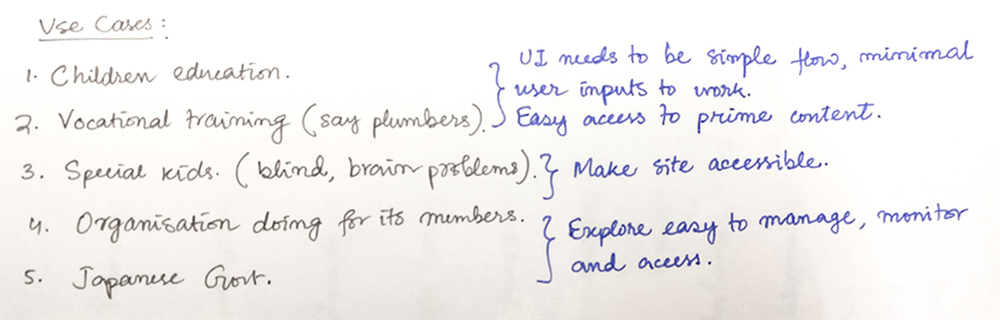
Based on the concept document I translated the use cases to UI requirements
The content to be served is curated by different NGOs for their users. The users can have content from multiple sources — NGOs and third-parties. They may be kids trying to learn science or grown-ups trying to pick up a new skill for work.
Before proceeding with the app, I had to work on the branding… It is real fun sketching shapes and choosing colours, not to mention deciding on a typeface!
Creating a logo
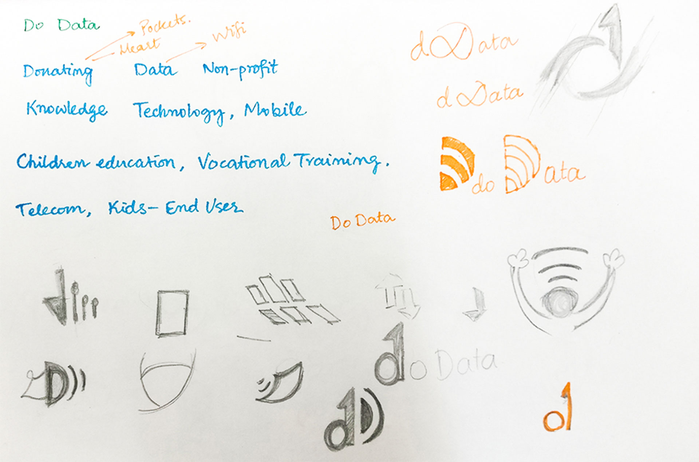
I associated keywords with the project and began sketching out ideas that involved WiFi, internet, people and of course the cursive 'D'
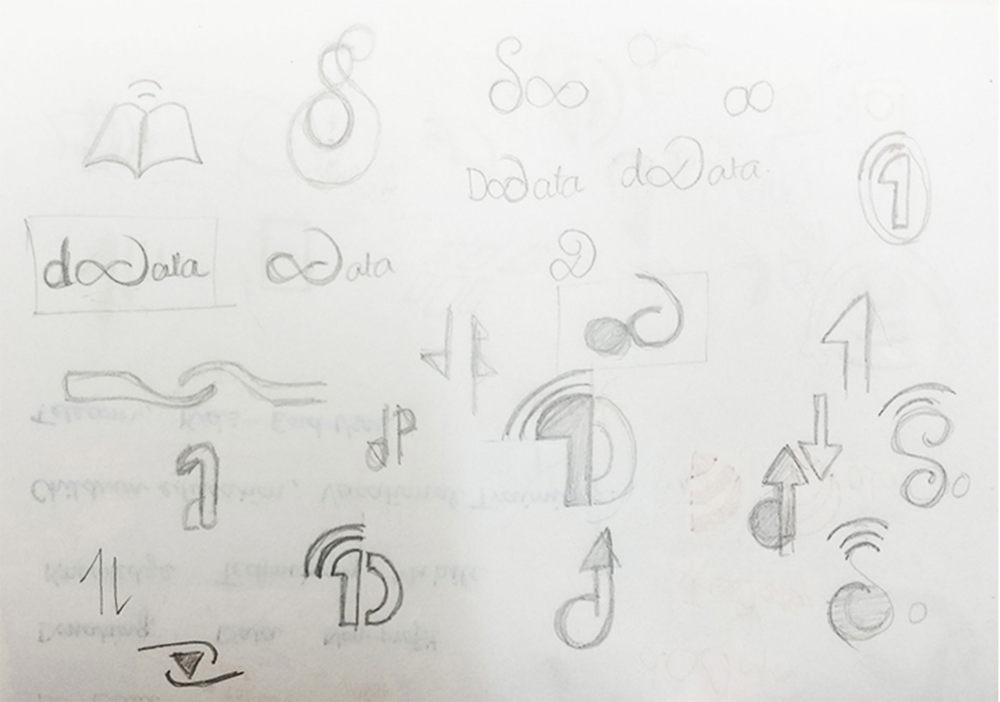
I played around with text a bit
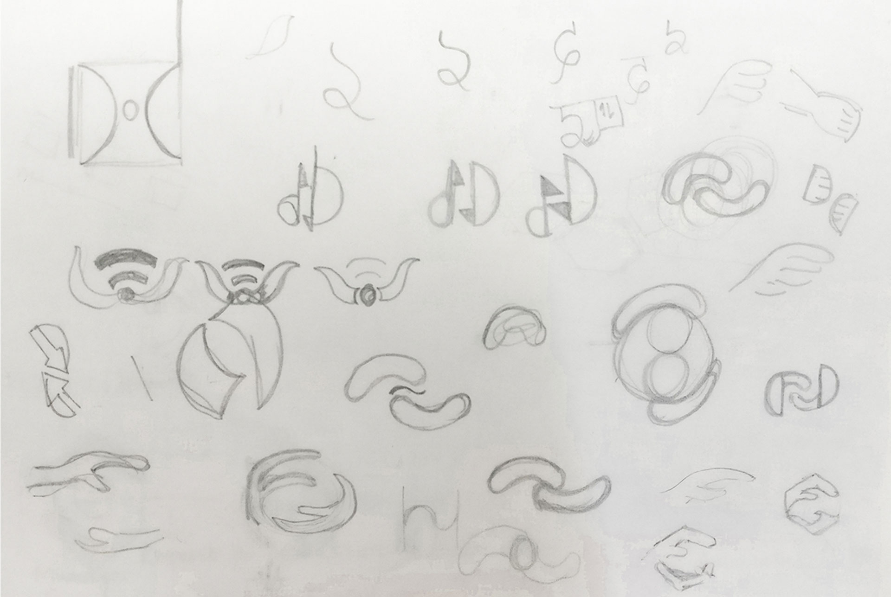
…and some more sketches before I moved on to Illustrator
The idea was to integrate the gesture of giving with care with the symbol for internet and the letter 'D'. I tried to use mostly geometric shapes to ensure pixel-perfection on screens.
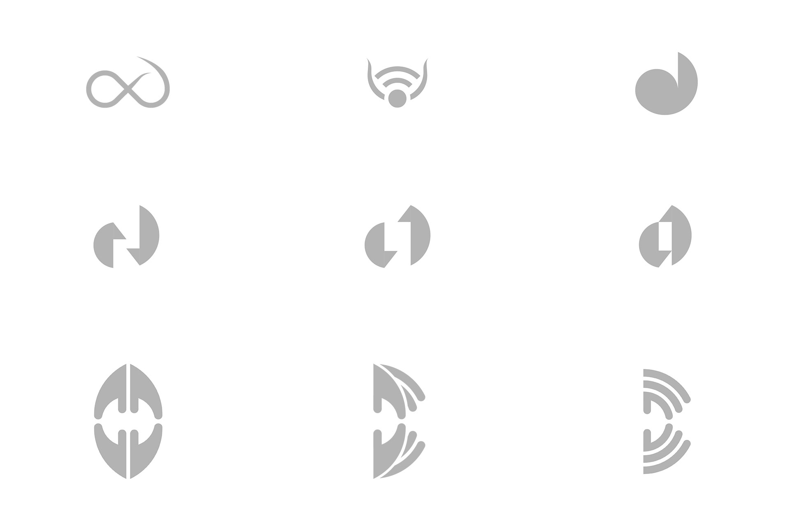
Digital explorations for the logo
The guys at Rupeelog decided to go with the bottom right shape. It is simple and conveys the message.
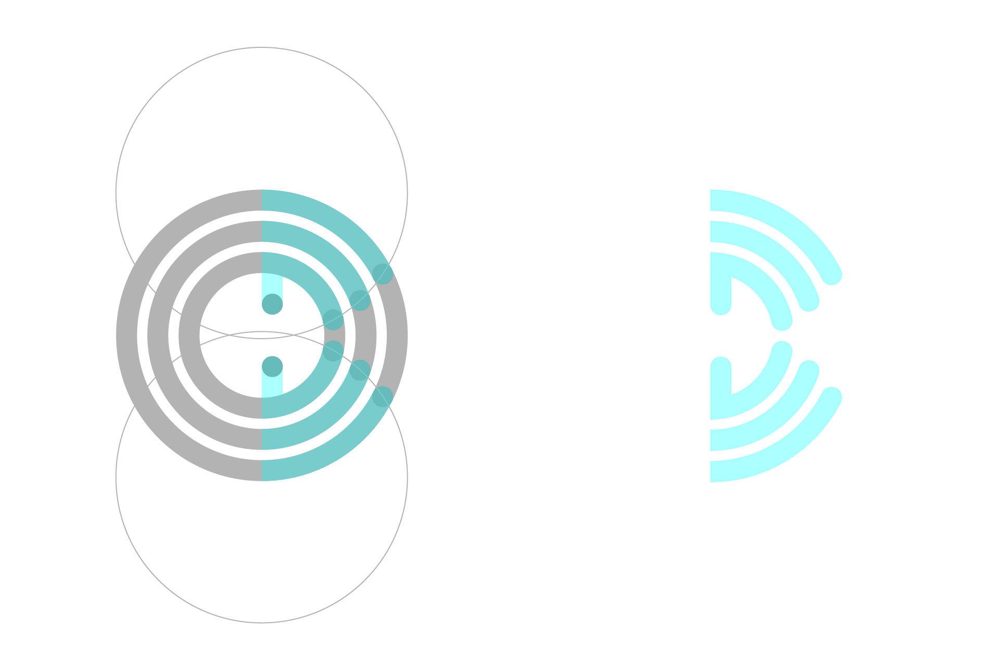
Construction of the final DoData logo
Choosing colours
I wanted colours that could express growth, prosperity and happiness along with the intellectual aspect of the app. So, I decided to experiment with green, yellow, and blue which could express the above attributes as explained by Timothy Samara in his book Drawing for Graphic Design.
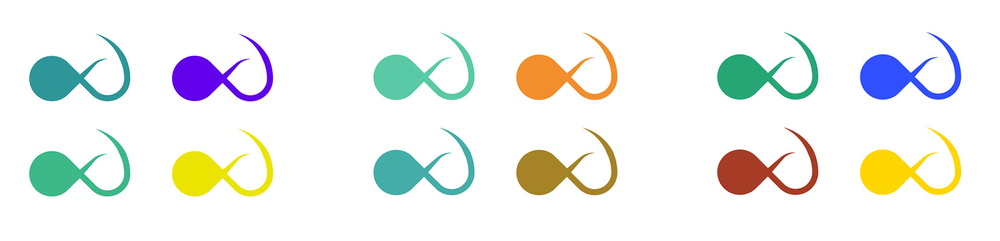
Initial colour explorations
I finally settled with two hues of green — one with yellow and one with blue, using which I developed the colour palette for the app.
Choosing typefaces
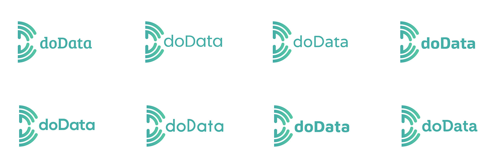
Testing out fonts to go with the logo
I finally settled with Bree-Serif for the logotype because of its cheerful and friendly appearance. For the app content, I chose Noto Sans because it can support a multilingual app with its wide coverage of over 30 scripts.
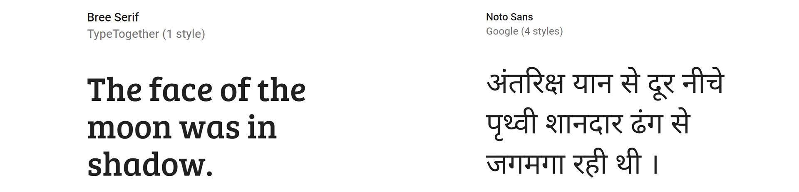
The splash screen of the app
I wanted to keep the UI as close to a standard Android app so that it is intuitive to users familiar with an Android phone. Also, to avoid leaving the users in a state of anguish, it was important to consider edge cases to handle error scenarios efficiently.
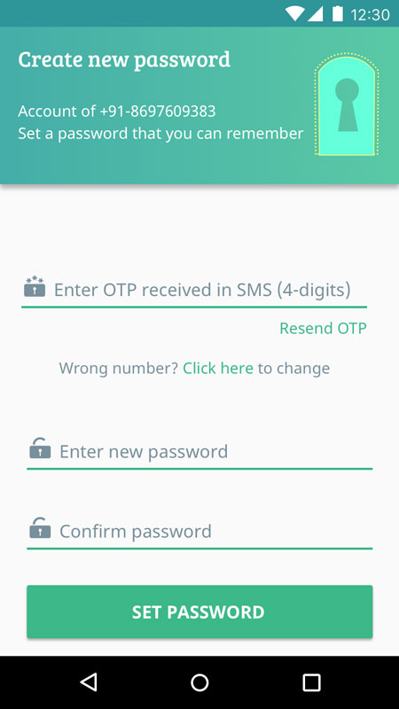
If the user doesn't receive the OTP on the number entered or wishes to change it, he can do so without using the back button
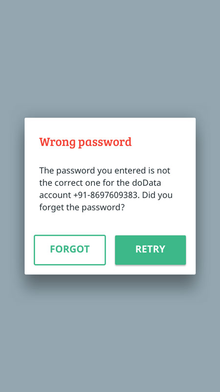
When wrong password is entered, the user is asked to either check the password and retry or reset the password
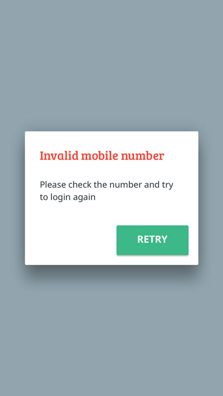
When the user enters an invalid mobile number, he is asked to check and enter the number again
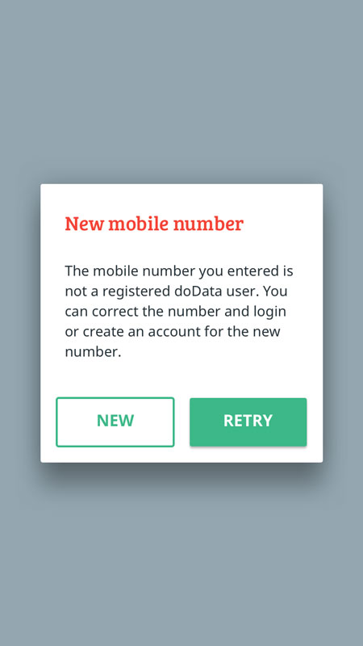
When the user enters a valid (10-digit) mobile number which has not been registered as a DoData user, he can either register it or retry with a different number
The dashboard contains the content categorised by the sources, specific to the current user. If a single account is used by an entire family, the account admin can add family members and they can access their content by simply switching the user from the menu.
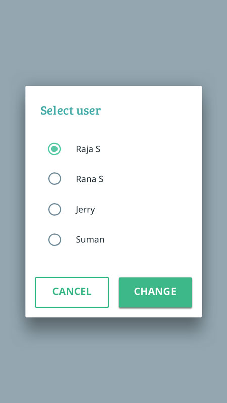
Dialog to change active user
The card-grid layout is preferred here as it gives an overview of content categories, without the user having to scroll much. This has an advantage over accordion lists when the number of items is large.
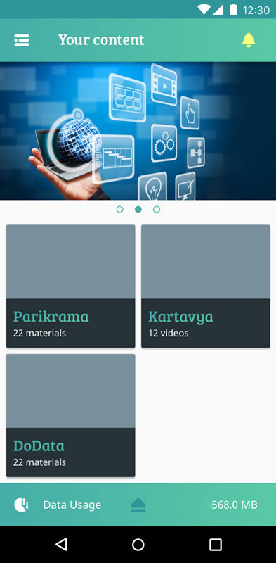
User dashboard with content group cards.
The banner acts as placeholder for advertisements and promotional content from the Government or other sources. It can help instil preferred values (like Nationalism, Cleanliness) in the consumer.
The app can help form effective habits by incentives (in terms of data and other things) and by alerts and reminders, accessible from the notifications section.
Keeping track of data usage is just a swipe away. It can help users use their bandwidth efficiently — balancing between education and entertainment.
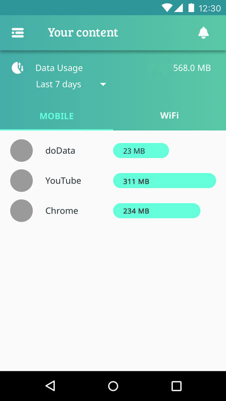
Data usage statistics for the user.
Designing the icons
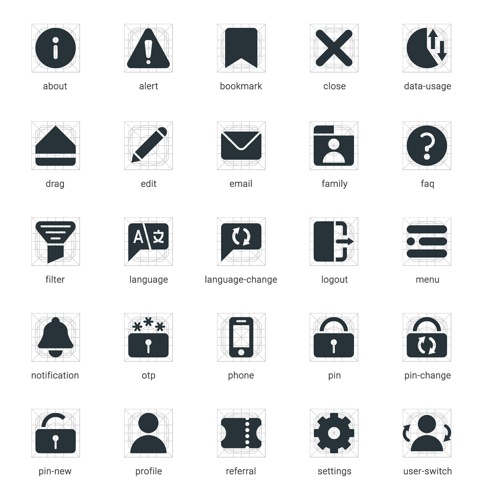
Even though many of them are standard icons, I recreated them to fit the solid visual family
…and then the developers developed.
The app is available for download on the Google Play Store.